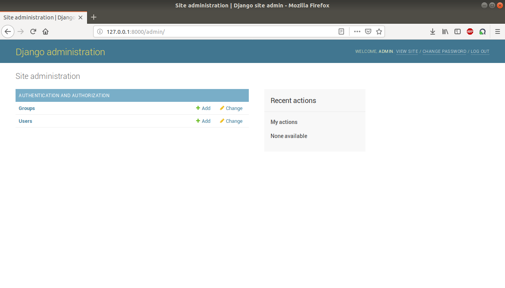

The accessibility of the administration system has already be explained in the Network Page. The creation of a superuser is achievable before running the server, see the User Guide, by typing python3 manage.py createsuperuser. Some prompts are displayed on the terminal, just follow them. Once the creation is achieved, it is possible to login with the new superuser account through the login page, see Register.
The administration system is directly provided by Django, the homepage looks like below.
The options offered by the Django administration are found in the top right corner. An explanation of them would be irrelevant, consequently we leave it to the reader to discover the mechanisms, following this. Nevertheless note that when a superuser disconnects, the logout page is this one provided by Django administration, so that the user is redirected to the administration login page this time.
Refer to the Useful links to get acquainted with the Django administration functionalities.
« Network Page :: Contents :: Developer Guide »